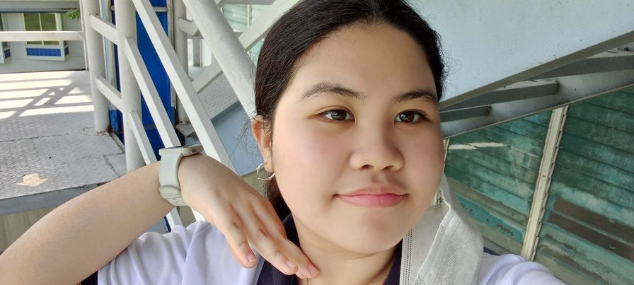
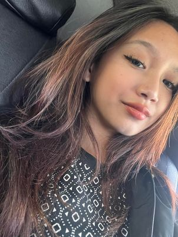

Sofia Ibanez
Sofia likes the color Purple, she doesn't like Ampalaya/bitter gourd, she prefers going outside and being with nature, and her favorite song of all time is Nothing's Gonna Stop Us Now by Starship.
She plays games when she's free, she always hangs out with her cousins, and is an introvert. And she hopes that someday she will be able to help people out.

Danaia Hiso
I describe myself as an extraversion person due to the fact that I'm casually a sociable and a friendly person. Extraversion describes my whole personality because of the fact that I'm a very talkative person and outgoing. This trait/personality really helps me with making friends and making my life exciting day by day. My love for chatting sometimes is an issue for me, because some people that I talk to are really busy people and I bother them sometimes with my bickering but as I’m growing older I don’t chat a lot anymore due to stress and being alone all the time, as I grow old, I find more peace in quiet places rather than being
chatty but I’m still an extraversion around people who I’m close with. Having an extraversion trait is great because it helps me a lot in making friends.